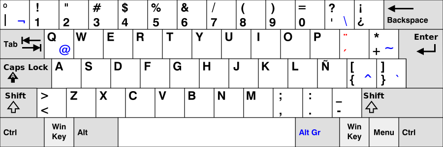

Las computadoras son la interfaz entre los humanos y el mundo moderno. El teclado es una de las principales interfaces entre los humanos y la computadora. Dada la cantidad de tiempo que lo usamos, conviene que estemos completamente cómodos con él.
Hay varias cosas que influyen en cómo lo usamos y, dependiendo de sus características, podremos disfrutar más o menos al usarlo. Largas horas de trabajo pueden ser llevaderas o dolorosas. Revisemos entonces algunas cosas que se deben tomar en cuenta:
Distribución Ingles vs Español
Una de los parámetros más evidentes de un teclado es su distribución, cuantas personas de habla hispana han usado siempre una distribución ISO en español y han “sufrido” el tener que usar una distribución en inglés (principalmente en computadoras portátiles)

Pero a pesar de la fuerza de costumbre, la realidad es que ciertas actividades se benefician de la distribución en inglés estadounidense (US).
Ocurre que muchos programas fueron originalmente pensando desde la perspectiva de alguien usando esta distribución, los comandos de software fueron pensados para ser fáciles de usar en la distribución US no en la distribución ES. Esto es particularmente marcado en los lenguajes de programación, donde los caracteres más comunes de la sintaxis son aquellos de fácil acceso en la distribución US.
Aunque, dependiendo de las actividades del usuario, la distribución US puede resultar conveniente, aún necesitamos tildes y ñ. Aunque cambiar la distribución del teclado mediante software es una opción, debería considerarse la distribución US-International.
A nivel de software esta distribución puede funcionar de dos maneras:
US-International y US-International-altgr
Con US-International, la tecla de “tilde” (a la izquierda del enter) funciona tal cual en la distribución ES, mientras que para usar las comillas simples y dobles que se encuentran en la misma tecla es necesario pulsarla dos veces. Para la ñ podemos colocar el carácter ~ seguido de la n.
Con US-International-altgr, podemos usar el modificador alt Gr seguido de la vocal tildada o la letra n para colocar una ñ, y en este caso podremos usar las comillas simples y dobles con un solo toque.
La forma de configurar este comportamiento en X11 es:
[US-INTERNATIONAL]
$ setxkbmap us -variant intl
[US-INTERNATIONAL-ALTGR]
$ setxkbmap us -variant altgr-intl
Para la terminal TTY simplemente usar la distribución us-intl:
$ loadkeys us-intl
Distribución: QWERTY vs DEVORAK
La distribución no se refiere solamente al idioma, sino también a la distribución general de las letras.
No voy a profundizar demasiado sobre la razón de su existencia, pero comentaré que existe un error común al pensar que QWERTY fue diseñado para reducir deliberadamente la velocidad de escritura, lo cual no es cierto. QWERTY se diseñó en el tiempo de las máquinas de escribir, cuando los actuadores mecánicos se trababan entre si al escribir, la solución fue distribuir las teclas de forma tal que las más usadas emplean palancas que minimizan la probabilidad y frecuencia de este problema.
QWERTY
DEVORAK, por otro lado, se diseñó cuando la sobre posición de los actuadores mecánicos no era más un problema y se podía pensar por completo en la eficiencia de escritura, colocando las teclas más comunes lo más cercanas entre si, resultando en una distribución que permite escribir más rápido y con menor esfuerzo.
DEVORAK
Caps lock vs Control
No existe discusión al decir que siempre que podamos usar atajos con el teclado podremos realizar tareas de forma más cómoda y eficientemente. Los atajos involucran mucho la tecla Control (Ctrl), que en el teclado moderno, tiene una ubicación poco ideal. La disposición original de la tecla Control era mucho más cómoda de alcanzar.
Con el tiempo esta se reemplazo por la -inútil- tecla Caps Lock y se colocó la tecla Control donde antes teníamos la tecla Alt.
Existen al menos dos formas de cambiar esto:
Por software, podemos hacer que nuestro SO interprete la tecla Caps Lock como Control y viceversa.
Por hardware, ciertos teclados tienen algún mecanismo de configuración para intercambiar estas dos teclas.
Teclados mecánicos vs teclados de membrana
Los teclados más comunes funcionan con una membrana de látex justo debajo de las teclas, que al presionarlas cierran un contacto eléctrico. Estos teclados son baratos de fabricar y por lo tanto comunes.
Los teclados mecánicos, por otra parte, tienen un interruptor mecánico debajo de cada tecla. Dependiendo del tipo de interruptor en concreto, nos proporcionará retroalimentación táctil, una mejor velocidad de respuesta y posiblemente una retroalimentación audible también.
En general, el uso de un teclado mecánico proporciona una sensación mucho más placentera y cómoda, además de su durabilidad superior. Aunque son significativamente más costosos, si uno pasa el 90% de su existencia aporreando teclas, mejor que sea un excelente teclado: que sea cómodo y que el impacto en nuestros dedos sea mínimo.
Existen varias empresas fabricantes de interruptores mecánicos usados en teclados, y varias empresas fabricantes de teclados mecánicos que usaran unos interruptores u otros, sin embargo, los más populares son lo que fabrica la empresa Cherry.
Cherry fabrica varios tipos de interruptores los cuales codifica por colores, donde cada color tendrá características diferentes como: fuerza de actuación, feedback táctil, feedback audible (click), etc.
El interruptor Cherry Azul, por ejemplo, tiene un pequeño feedback táctil y un sexy sonido (click) al presionar.
Full size vs TKL vs 60%
Otro factor que, aunque no lo parezca en principio es realmente importante para asegurar la comodidad, es la cantidad de teclas y longitud.
Full size
Teclados completos que incluyen el teclado numérico. Con la posible desventaja de que el ratón queda más lejos y el movimiento constante para alcanzarlo puede resultar cansado.
TKL
TKL significa Teen keys less, son teclados sin el teclado numérico.
60%
Tienen únicamente la parte indispensable de un teclado, pero que nadie se asuste! Todas las teclas “faltantes” se pueden usar mediante una tecla de función que actúa como modificador, con lo cual toda la funcionalidad está disponible.
Mecanografía (Touch Typing)
El Touch typing, mejor conocido como “mecanografía” en países de habla hispana, es la capacidad de usar un teclado sin ver a las teclas, usando los 10 dedos y rápido, muy rápido!
Saber mecanografía es una habilidad imprescindible para alguien que dedica mucho tiempo a usar un teclado, si bien ser capaz de escribir a gran velocidad es algo deseable, lo principal es ser capaz de escribir sin ver al teclado, por los beneficios ergonómicos que implica.
Lo ideal es siempre tener el monitor a la altura de los ojos y el teclado a la altura de los codos, cosa que se puede lograr incluso con laptops, colocando esta en una base alta y usando un teclado USB a la altura adecuada. Con esta posición correcta de los elementos, mover la cabeza repetidamente para ver el monitor y el teclado es un ejercicio cansado y poco saludable, de forma que el touch typing es indispensable.